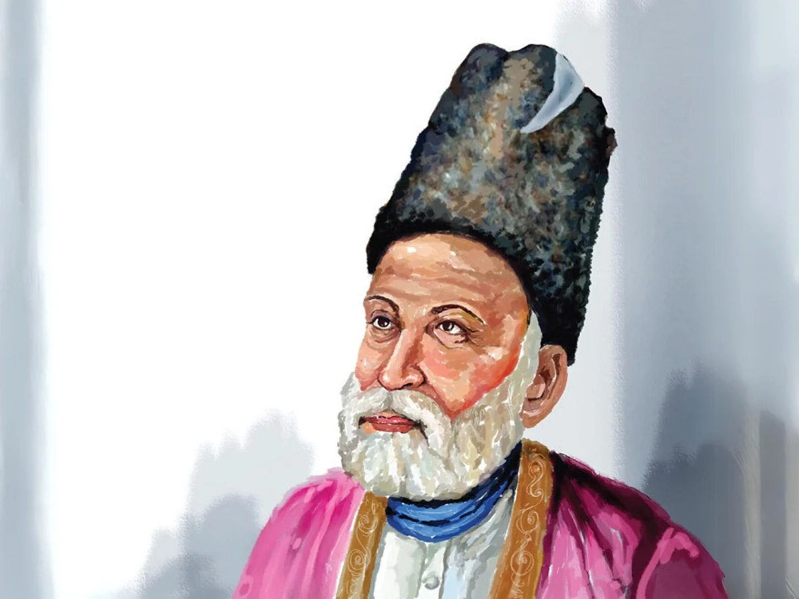

کلامِ مرزا غالب
اصل نام : مرزا اسد اللہ بیگ خان
تخلص: غالب
ادبی تعارف
مرزا اسد اللہ خاں غالب کا شمار اردو اور فارسی ادب کے ان عظیم ترین اور یگانہ روزگار شعرا میں ہوتا ہے، جن کے قلم نے غزل کو ایک نئی فکری اور فنی جہت سے روشناس کرایا۔ آپ ۲۷ دسمبر ۱۷۹۷ء کو آگرہ کے ایک معزز گھرانے میں پیدا ہوئے۔ کم سنی میں ہی والد کی شفقت اور پھر چچا کے سائے سے محروم ہونے کے بعد، آپ نے اوائلِ عمری میں ہی دہلی کا رخ کیا اور پھر تاحیات اسی تاریخی شہر کی علمی و ادبی فضاؤں کو اپنا مسکن بنائے رکھا۔ غالب کی غیر معمولی علمی و ادبی صلاحیتوں نے مغل دربار کو بھی اپنا گرویدہ بنا لیا۔ اسی وابستگی کے سبب انہیں شاہی دربار سے 'نجم الدولہ'، 'دبیر الملک' اور 'نظام جنگ' جیسے معزز خطابات سے نوازا گیا، اور وہ آخری مغل تاجدار بہادر شاہ ظفر کے استادِ سخن مقرر ہوئے۔ ان اعزازات نے جہاں ان کی سماجی حیثیت کو مستحکم کیا، وہیں ان کے کلام کی پختگی کو بھی جلا بخشی۔ آپ کی شاعری محض حسن و عشق، ہجر و وصال، یا گل و بلبل کی روایتی داستانوں تک محدود نہیں تھی۔ غالب کی سب سے بڑی انفرادیت یہ ہے کہ انہوں نے غزل کے محدود کینوس پر حیات و کائنات کے پیچیدہ اسرار، فلسفہ اور انسانی نفسیات کی گہرائیوں کو انتہائی فنکارانہ چابک دستی سے پیش کیا۔ ان کا کلام زندگی کے تلخ حقائق، غمِ روزگار کی کسک اور تفکر کی وہ وسعتیں لیے ہوئے ہے، جو ہر دور کے قاری کو اپنے دل کی آواز محسوس ہوتا ہے۔ شاعری کے ساتھ ساتھ غالب کی نثر نگاری بھی اردو ادب کا ایک بیش قیمت سرمایہ ہے۔ ان کے خطوط نے اس دور کی مقفّیٰ اور مسجّع عبارت آرائی کی فرسودہ روایات کو ترک کر کے ایک بے ساختہ، سادہ اور مکالماتی طرزِ تحریر کی بنیاد رکھی۔ انہوں نے پرانے رسم و رواج کی زنجیریں توڑتے ہوئے خود کہا تھا کہ "میں نے مراسلے کو مکالمہ بنا دیا ہے"، جس کی بدولت ان کی نثر میں وہی شگفتگی اور برجستگی نظر آتی ہے جو ان کی گفتگو کا خاصہ تھی۔ ۱۵ فروری ۱۸۶۹ء کو دہلی کی خاک میں روپوش ہونے والے اس عظیم مفکر شاعر کی آخری آرام گاہ بستی حضرت نظام الدین میں واقع ہے۔ آج بھی ان کا کلام کسی بھی دیوانِ سخن کی جان تسلیم کیا جاتا ہے اور ان کے اشعار کی فکری گہرائی ہر عہد کے ادب دوست کے لیے ایک پرسکون اور جمالیاتی تسکین کا باعث ہے۔ بے شک، دنیا میں سخن ور بہت اچھے ہیں، مگر غالب کے اندازِ بیاں کی سحر طرازی کا کوئی ثانی نہیں۔
شعر
ہم کو معلوم ہے جنت کی حقیقت لیکن دل کے خوش رکھنے کو غالبؔ یہ خیال اچھا ہے
شعر
عشق نے غالبؔ نکما کر دیا ورنہ ہم بھی آدمی تھے کام کے
شعر
ان کے دیکھے سے جو آ جاتی ہے منہ پر رونق وہ سمجھتے ہیں کہ بیمار کا حال اچھا ہے
شعر
محبت میں نہیں ہے فرق جینے اور مرنے کا اسی کو دیکھ کر جیتے ہیں جس کافر پہ دم نکلے
شعر
پوچھتے ہیں وہ کہ غالبؔ کون ہے کوئی بتلاؤ کہ ہم بتلائیں کیا
شعر
اس سادگی پہ کون نہ مر جائے اے خدا لڑتے ہیں اور ہاتھ میں تلوار بھی نہیں
شعر
رگوں میں دوڑتے پھرنے کے ہم نہیں قائل جب آنکھ ہی سے نہ ٹپکا تو پھر لہو کیا ہے
شعر
کی مرے قتل کے بعد اس نے جفا سے توبہ ہائے اس زود پشیماں کا پشیماں ہونا
شعر
ہزاروں خواہشیں ایسی کہ ہر خواہش پہ دم نکلے بہت نکلے مرے ارمان لیکن پھر بھی کم نکلے
شعر
عشق پر زور نہیں ہے یہ وہ آتش غالبؔ کہ لگائے نہ لگے اور بجھائے نہ بنے
شعر
ہم نے مانا کہ تغافل نہ کرو گے لیکن خاک ہو جائیں گے ہم تم کو خبر ہوتے تک
شعر
رنج سے خوگر ہوا انساں تو مٹ جاتا ہے رنج مشکلیں مجھ پر پڑیں اتنی کہ آساں ہو گئیں
شعر
ہیں اور بھی دنیا میں سخن ور بہت اچھے کہتے ہیں کہ غالبؔ کا ہے انداز بیاں اور